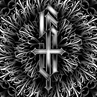

Доступен
Орнаментальный mandala
Геометрия и орнамент · предплечье или плечо
Sketches & Lettering
Готовые эскизы, доступные для нанесения, или индивидуальная разработка под вашу уникальную идею.
Геометрия и орнамент · предплечье или плечо

Black & Gray · плечо, грудь или спина

Dotwork и linework · запястье или предплечье

Изящное решение · запястье или щиколотка
Lettering · ребро, предплечье или запястье

Black & Gray · любая зона тела

Орнаментал · бедро или спина

Разработаю с нуля под вашу идею и анатомию
Не нашли подходящий эскиз в библиотеке? Я создам уникальный рисунок специально для вас. Расскажите о своей идее, покажите референсы — и мы вместе доведём эскиз до идеала перед сеансом.